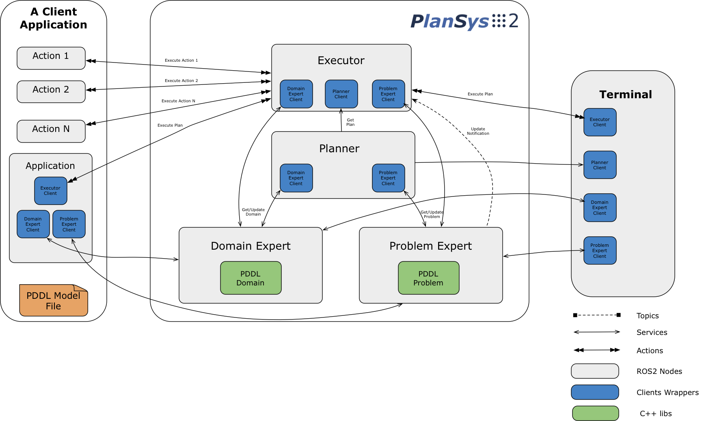
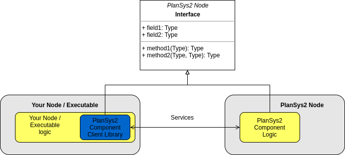
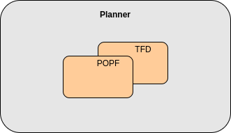
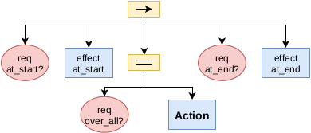
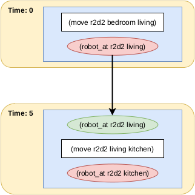
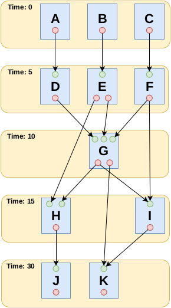
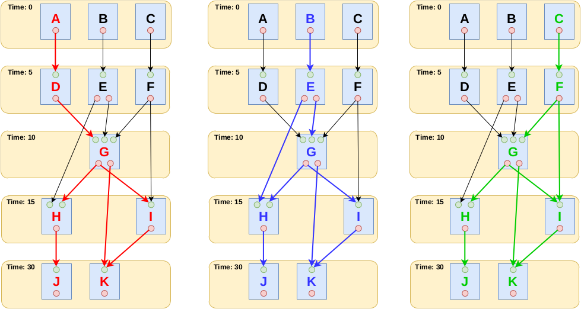
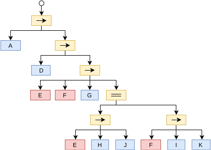

PlanSys2 design¶
{kind=link}
PlanSys2 has a modular design. It is basically composed of 4 nodes:
Domain Expert: Contains the PDDL model information (types, predicates model, and actions).
Problem Expert: Contains the current instances, predicates, and goals that compose the model.
Planner: Generates plans (sequence of actions) using the information contained in the Domain and Problem Experts.
Executor: Takes a plan and executes it by activatin the action performers (the ROS2 nodes that implement each action).
Each of these nodes exposes its functionality using ROS2 services. Even so, in PlanSys2 we have created a client library that can be used in any application and hides the complexity of using ROS2 services.
{kind=link}
1. Domain Expert¶
The objective of the Model Expert is to read PDDL domains from files and make them available to the rest of the components. It’s static (by now).
Parameters¶
model_file[string]: PDDL model files to load, separates by “:”. These models will be merged. This lets to have a modular application in which each component/package contributes with part of the PDDL and the action implementation. See plansys2_multidomain_example for more details.
Client API¶
std::vector<std::string> getTypes() std::vector<std::string> getPredicates() boost::optional<plansys2::Predicate> getPredicate(const std::string & predicate) std::vector<std::string> getActions() boost::optional<plansys2::Action> getAction(const std::string & action) std::vector<std::string> getDurativeActions() boost::optional<plansys2::DurativeAction> getDurativeAction(const std::string & action) std::string getDomain()
Services¶
domain_expert/get_domain_types[plansys2_msgs::srv::GetDomainTypes]: Get the valid types.domain_expert/get_domain_actions[plansys2_msgs::srv::GetDomainActions]: Get the available actions.domain_expert/get_domain_action_details[plansys2_msgs::srv::GetDomainActionDetails]: Get the details of a specific action.domain_expert/get_domain_predicates[plansys2_msgs::srv::GetDomainPredicates]: Get the valid predicates.domain_expert/get_domain_predicate_details[plansys2_msgs::srv::GetDomainPredicateDetails]: Get the details of a specific predicate.domain_expert/get_domain[plansys2_msgs::srv::GetDomain]: Set the domain as a string.
Publishers / Subscriber¶
None
2. Problem Expert¶
Contains the knowledge of the system: instances, grounded predicates, and goals.
Parameters¶
model_file[string]: PDDL model files to load, separates by “:”. These models will be merged. This lets to have a modular application in which each component/package contributes with part of the PDDL and the action implementation. See plansys2_multidomain_example for more details. It must have the same value as in Domain Expert.
Client API¶
std::vector<Instance> getInstances() bool addInstance(const Instance & instance) bool removeInstance(const std::string & name) boost::optional<Instance> getInstance(const std::string & name) std::vector<Predicate> getPredicates() bool addPredicate(const Predicate & predicate) bool removePredicate(const Predicate & predicate) bool existPredicate(const Predicate & predicate) bool addAssignment(const Assignment & assignment) Goal getGoal() bool setGoal(const Goal & goal) bool clearGoal() std::string getProblem()
Services¶
problem_expert/add_problem_goal[plansys2_msgs::srv::AddProblemGoal]: Replace the goal.problem_expert/add_problem_assignment[plansys2_msgs::srv::AddProblemAssignment]: Add an assignment.problem_expert/add_problem_instance[plansys2_msgs::srv::AddProblemInstance]: Add an instance.problem_expert/add_problem_predicate[plansys2_msgs::srv::AddProblemPredicate]: Add a predicate.problem_expert/get_problem_goal[plansys2_msgs::srv::GetProblemGoal]: Get the current goal.problem_expert/get_problem_instance_details[plansys2_msgs::srv::GetProblemInstanceDetails]: Get the details of an instance.problem_expert/get_problem_instances[plansys2_msgs::srv::GetProblemInstances]: Get all the instances.problem_expert/get_problem_predicate_details =[plansys2_msgs::srv::GetProblemPredicateDetails]: Get the details of a predicate.problem_expert/get_problem_predicates[plansys2_msgs::srv::GetProblemPredicates]: Get all the predicates.problem_expert/get_problem[plansys2_msgs::srv::GetProblem]: Get the PDDL problem as a string.problem_expert/remove_problem_goal[plansys2_msgs::srv::RemoveProblemGoal]: Remove the current goal.problem_expert/remove_problem_instance[plansys2_msgs::srv::RemoveProblemInstance]: Remove an instance.problem_expert/remove_problem_predicate[plansys2_msgs::srv::RemoveProblemPredicate]: remove a predicate.problem_expert/exist_problem_predicate[plansys2_msgs::srv::ExistProblemPredicate]: Check if a predicate exists.
Publishers / Subscriber¶
problem_expert/update_notify[std_msgs::msg::Empty] {Publisher: rclcpp::QoS(100)}: A message is published in this topic when any element of the problem changes.
3. Planner¶
This component calculates the plan to obtain a goal.
When requested for a plan, the Planner asks the Planner Expert the domain, and the Problem Expert the problem.
The domain is stored in
/tmp/<node namespace>/domain.pddl. This lets to have several PlanSys2 instances in the same machine, useful for simulating multiple robots in the same machine.The problem is stored in
/tmp/<node namespace>/problem.pddl.Run the PDDL Solver, storing the output in
tmp/<node namespace>/plan.pddl.Parse
tmp/<node namespace>/plan.pddlto get the sequence of actions as a vector of string.Return the result.
Each PDDL solver in PlanSys2 is a plugin. By default PlanSys2 uses POPF, although other PDDL solvers can be used easily. Right now it is available Temporal Fast Downward also.
{kind=link}
Parameters¶
plan_solver_plugins[vector<string>]: List of PDDL solver plugins. Currently, only the first plugin specified will be used. If not set, POPF will be used by default. Check this config as an example on how to use it.
Client API¶
boost::optional<Plan> getPlan()
Services¶
planner/get_plan[plansys2_msgs::srv::GetPlan]: Get a plan with the current info in Domain/Problem Expert.
Publishers / Subscriber¶
None
4. Executor¶
This component is responsible for requesting a plan and executing it. It is, by far, the most complex component since you must request a plan and execute it by activating the action performers. This task is carried out with the following characteristics:
It optimizes its execution, parallelizing the actions when possible.
Check if the requirements are met at runtime.
Allow more than one action performer for each action, supporting multirobot execution.
{kind=link}
Parameters¶
None
Client API¶
bool executePlan(); ExecutePlan::Feedback getFeedBack(); boost::optional<ExecutePlan::Result> getResult();
Actions¶
execute_plan[plansys2_msgs::action::ExecutePlan]: Execute the plan with the current info in Domain/Problem Expert.
Publishers / Subscriber¶
None
Behavior Tree builder¶
Once a plan is obtained, the Executor converts it to a Behavior Tree to execute it. Each action becomes the following subtree:
{kind=link}
The first step is building a planning graph that encondes the action dependencies that define the execution order. This is made by pairing the effects of an action with a requirement of a posterior action. We take as reference the time of the calculated plan:
 {kind=link}
{kind=link}
Once created the graph, we identify the execution flows:
{kind=link}
From the red flow, for example, we get:
{kind=link}
Each flow is executed in paralell. There is no problem if flows overlap because the BT that executes an action is implemented following a Singleton-like approach.
Action delivery protocol¶
In the first implementations of PlanSys2, the delivery of actions was done using ROS2 actions. This approach has currently been discarded as it is not flexible enough.
Instead, a bidding-based delivery protocol has been developed in the plansys2_msgs::msg::ActionExecution, and classes ActionExecutor and ActionExecutoClient.
When the Executor must execute an action, it requests which action performer can execute it. Those who can
reply to this request. The Executor confirms one of them (the first to answer), rejecting the rest. If none are found, repeat the request every second until you give up, aborting the
execution of the plan. This protocol uses the topic /action_hub, where you can monitorize teh execution of the system.
{kind=link}
All the action performers inherit from ActionExecutoClient, that is a ROS2 Node with the next information:
Parameters¶
~/action[string]: The action managed. This action performer discard any request non equal to this parameter.~/specialized_arguments[vector<string>]: If this parameter is not void, it only replies to action request that contains in any of the arguments any of these values.
Note
In a multirobot application, for example, we add to the actions a parameter with the robot that should do the action. In each robot we can execute the same action performer, and using ~/specialized_arguments we can select which will be executed.
Publishers / Subscriber¶
/actions_hub[plansys2_msgs::msg::ActionExecution] {Publisher: rclcpp::QoS(100).reliable()}: Receive messages from the Action Hub./actions_hub[plansys2_msgs::msg::ActionExecution] {Subscriber: rclcpp::QoS(100).reliable()}: Publish messages to the Action Hub.